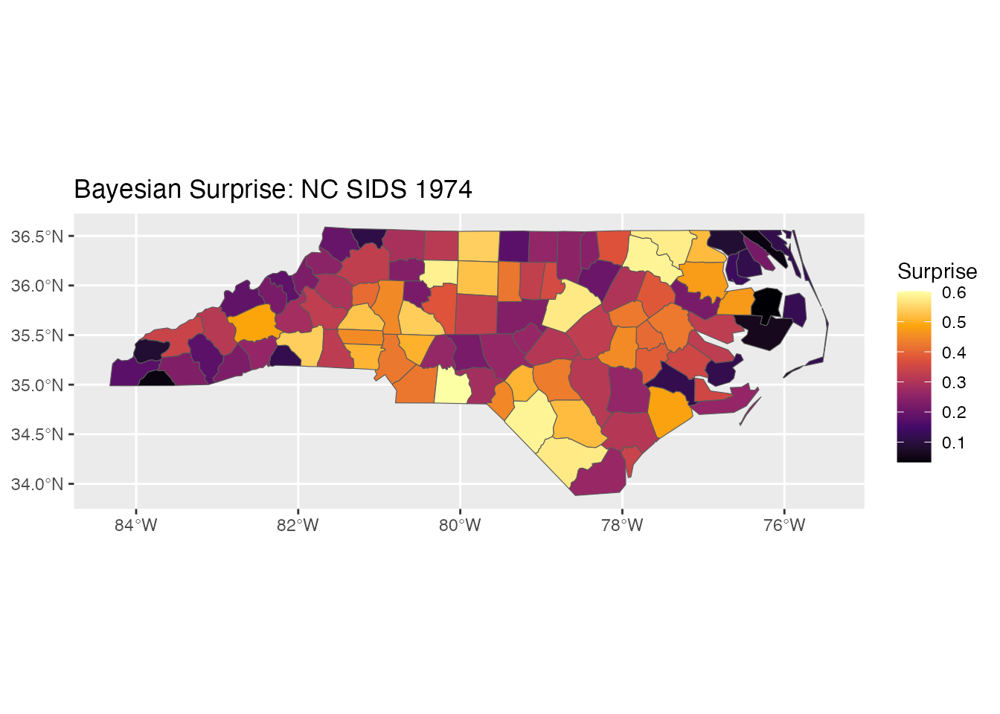
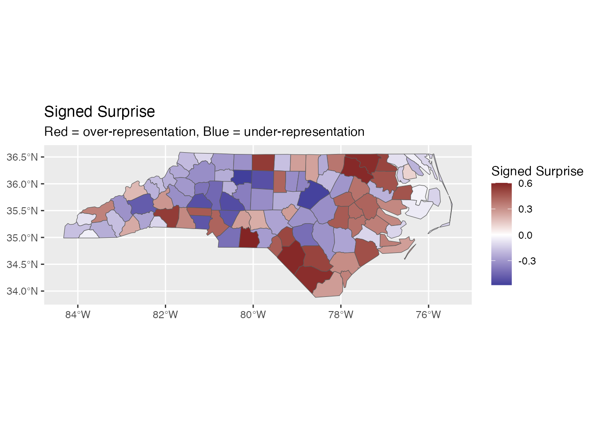
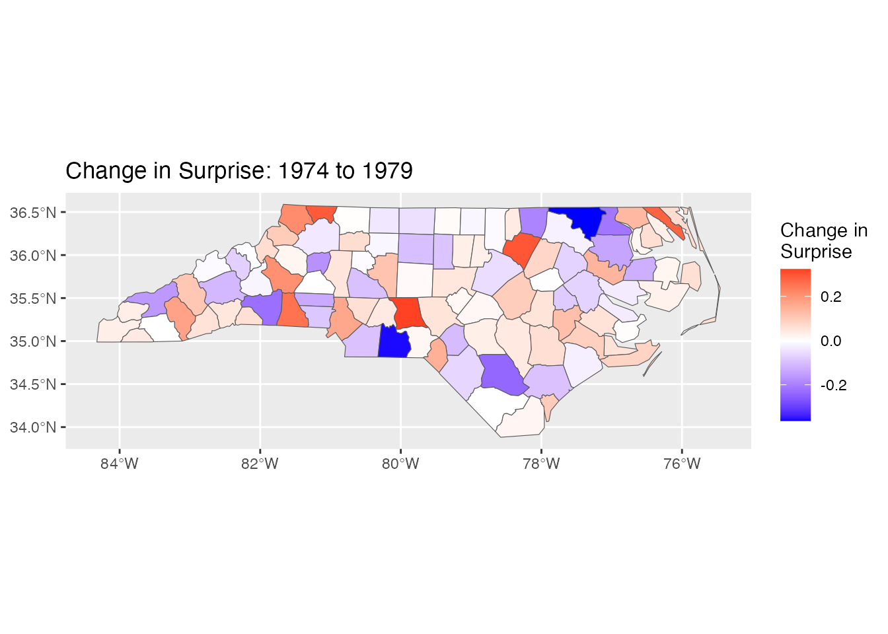

library(bayesiansurprise)
#> bayesiansurprise: Bayesian Surprise for De-Biasing Thematic Maps
#> Inspired by Correll & Heer (2017) - IEEE InfoVis
library(sf)
#> Warning: package 'sf' was built under R version 4.5.2
#> Linking to GEOS 3.13.0, GDAL 3.8.5, PROJ 9.5.1; sf_use_s2() is TRUE
library(ggplot2)
#> Warning: package 'ggplot2' was built under R version 4.5.2Overview
The bayesiansurprise package is designed for seamless
integration with the sf package for spatial data. This
vignette demonstrates workflows for analyzing spatial data.
Basic sf Workflow
Loading Spatial Data
# Load the NC SIDS dataset
nc <- st_read(system.file("shape/nc.shp", package = "sf"), quiet = TRUE)
# Examine the data
head(nc[, c("NAME", "SID74", "BIR74", "SID79", "BIR79")])
#> Simple feature collection with 6 features and 5 fields
#> Geometry type: MULTIPOLYGON
#> Dimension: XY
#> Bounding box: xmin: -81.74107 ymin: 36.07282 xmax: -75.77316 ymax: 36.58965
#> Geodetic CRS: NAD27
#> NAME SID74 BIR74 SID79 BIR79 geometry
#> 1 Ashe 1 1091 0 1364 MULTIPOLYGON (((-81.47276 3...
#> 2 Alleghany 0 487 3 542 MULTIPOLYGON (((-81.23989 3...
#> 3 Surry 5 3188 6 3616 MULTIPOLYGON (((-80.45634 3...
#> 4 Currituck 1 508 2 830 MULTIPOLYGON (((-76.00897 3...
#> 5 Northampton 9 1421 3 1606 MULTIPOLYGON (((-77.21767 3...
#> 6 Hertford 7 1452 5 1838 MULTIPOLYGON (((-76.74506 3...Computing Surprise
The surprise() function automatically detects sf objects
and uses the appropriate method:
Convenience Function: st_surprise
For explicit sf workflows, use st_surprise():
result2 <- st_surprise(nc, observed = SID74, expected = BIR74)
# Identical results
all.equal(result$surprise, result2$surprise)
#> [1] TRUEAccessing Results
Extracting Surprise Values
# Get surprise values
surprise_vals <- get_surprise(result, "surprise")
head(surprise_vals)
#> [1] 0.1952858 0.1107616 0.2909684 0.1171487 0.5777373 0.5143742
# Get signed surprise values
signed_vals <- get_surprise(result, "signed")
head(signed_vals)
#> [1] -0.1952858 -0.1107616 -0.2909684 -0.1171487 0.5777373 0.5143742Accessing the Model Space
mspace <- get_model_space(result)
print(mspace)
#> <bs_model_space>
#> Models: 3
#> 1. Uniform (prior: 0.3333)
#> 2. Base Rate (prior: 0.3333)
#> 3. de Moivre Funnel (paper) (prior: 0.3333)Working with the sf Object
The result is a full sf object, so all sf operations work:
# Filter high-surprise regions
high_surprise <- result[result$surprise > median(result$surprise), ]
cat("Regions with above-median surprise:", nrow(high_surprise), "\n")
#> Regions with above-median surprise: 50
# Compute centroids
centroids <- st_centroid(result)
#> Warning: st_centroid assumes attributes are constant over geometriesVisualization
ggplot2 Integration
ggplot(result) +
geom_sf(aes(fill = surprise)) +
scale_fill_surprise() +
labs(title = "Bayesian Surprise: NC SIDS 1974")
ggplot(result) +
geom_sf(aes(fill = signed_surprise)) +
scale_fill_surprise_diverging() +
labs(title = "Signed Surprise",
subtitle = "Red = over-representation, Blue = under-representation")
Comparing Time Periods
# Compute surprise for two time periods
result_74 <- surprise(nc, observed = SID74, expected = BIR74)
result_79 <- surprise(nc, observed = SID79, expected = BIR79)
# Compare
nc$surprise_74 <- result_74$surprise
nc$surprise_79 <- result_79$surprise
nc$surprise_change <- nc$surprise_79 - nc$surprise_74
# Plot change
ggplot(nc) +
geom_sf(aes(fill = surprise_change)) +
scale_fill_gradient2(low = "blue", mid = "white", high = "red",
name = "Change in\nSurprise") +
labs(title = "Change in Surprise: 1974 to 1979")
Advanced: Custom Model Spaces
# Create sophisticated model space
custom_space <- model_space(
bs_model_uniform(),
bs_model_baserate(nc$BIR74),
bs_model_gaussian(),
bs_model_funnel(nc$BIR74),
prior = c(0.1, 0.3, 0.2, 0.4)
)
result_custom <- surprise(nc, observed = SID74, expected = BIR74,
models = custom_space)
# Compute a global posterior model update explicitly if needed
updated_space <- bayesian_update(custom_space, nc$SID74)
cat("Prior:", custom_space$prior, "\n")
#> Prior: 0.1 0.3 0.2 0.4
cat("Posterior:", updated_space$posterior, "\n")
#> Posterior: 0.1986683 0.7875552 2.028479e-151 0.01377646Tips for Large Datasets
- Pre-compute expected values: If expected values are expensive to compute, store them
-
Use appropriate models: For very large datasets,
the Sampled model with smaller
sample_fraccan be faster - Parallel processing: The package is compatible with future/furrr for parallel computation
# For large spatial datasets
result <- surprise(large_sf,
observed = cases,
expected = population,
models = model_space(
bs_model_uniform(),
bs_model_baserate(large_sf$population)
))